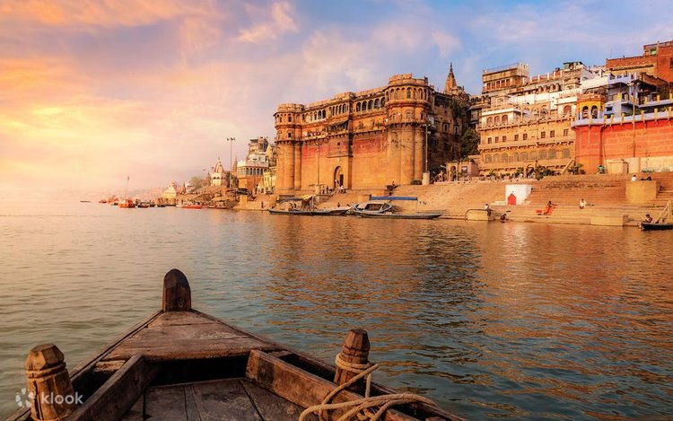

The city is very commonly referred to as City of Temples, Holy City of India,
Religious Capital of India and City of Learning

Varanasi is one of the oldest living cities in the world. Its prominence in Hindu mythology is virtually unrivaled. Mark Twain, the English author, who was enthralled by the legend and sanctity of Benares, once wrote, "Benares is older than history, older than tradition, older even than legend and looks twice as old as all of them put together".